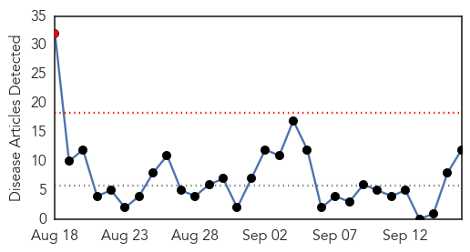

Influenza
30-Day Web Trend
4 alerts, 0 warnings

30-Day Twitter Trend
1 alerts, 0 warnings

Article Locations

Article Confidences

Top Articles:
- 0.998
- Hygiene best defense as virus spreads
- 0.994
- Enterovirus D68 not found in Morgan County hospitals
- 0.970
- Women & Children’s Hospital opens overflow unit to handle high number of children with respiratory illness
- 0.964
- MDA Offers Flu Shots to Those Affected by Muscle Disease
- 0.959
- Vaccine clinics gearing up for flu season
- 0.936
- Vaccinations to be required for students and toddlers
- 0.515
- InDevR Wins Barda Contract for Cutting-Edge Influenza Diagnostic
Top Tweets:
-
No tweets found for Sep 16, 2014
Cholera
30-Day Web Trend
1 alerts, 0 warnings

30-Day Twitter Trend
0 alerts, 0 warnings

Article Locations

Article Confidences

Top Articles:
- 0.999
- Haiti Cholera Response: Mid-Year Update (January - July 2014) - Haiti
- 0.913
- Pakistan, India Flood Leaves Health Risks in Its Wake
- 0.881
- Stop politicizing health issues-Dr. Frempong
- 0.797
- Stagnant floodwater raising health risk in Kashmir
- 0.794
- People of Kashmir face risk of serious disease in wake of devastating floods
- 0.772
- Dirty water raising health risk in flooded Kashmir
- 0.731
- Stagnant floodwater raising health risk in Kashmir
- 0.687
- Stagnant floodwater raising health risk in Kashmir
- 0.681
- Stagnant floodwater raising health risk in Kashmir
- 0.649
- Stagnant floodwater raising health risk in Kashmir
- 0.557
- Mahama calls for end to open defecation
- 0.502
- Stagnant floodwater raising health risk in Kashmir
Top Tweets:
-
No tweets found for Sep 16, 2014